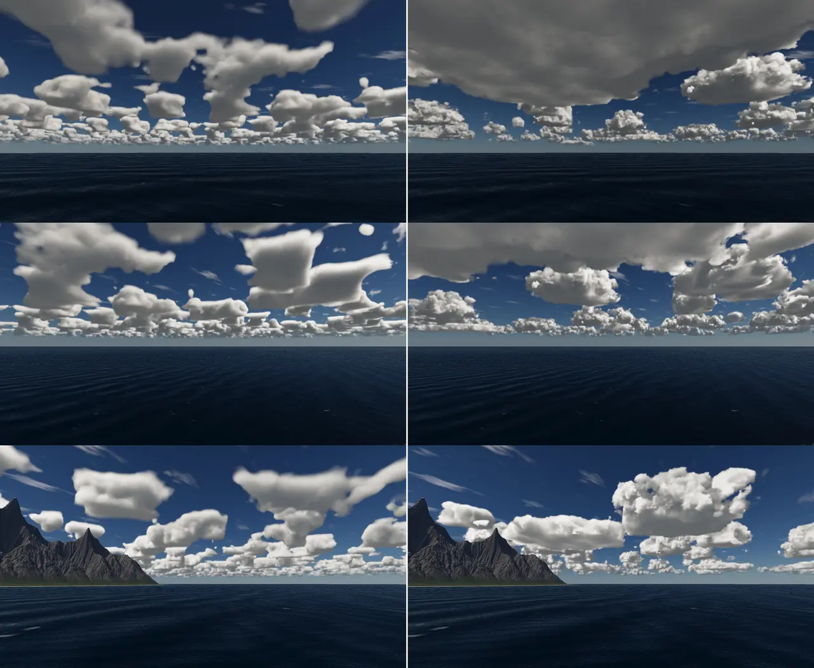
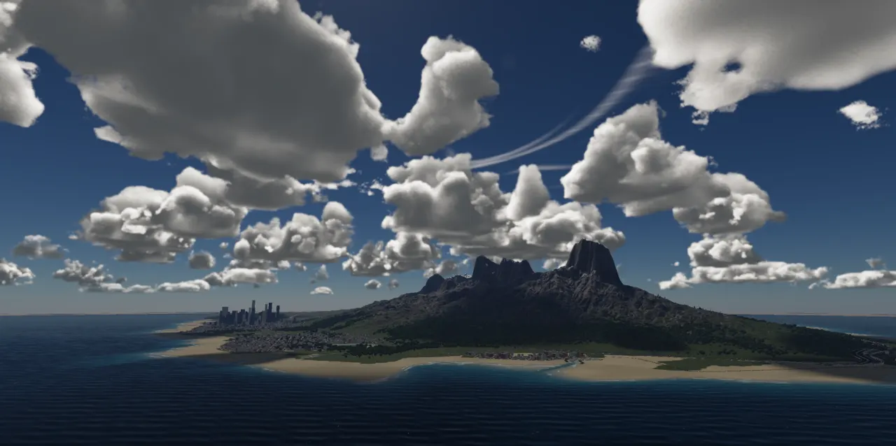
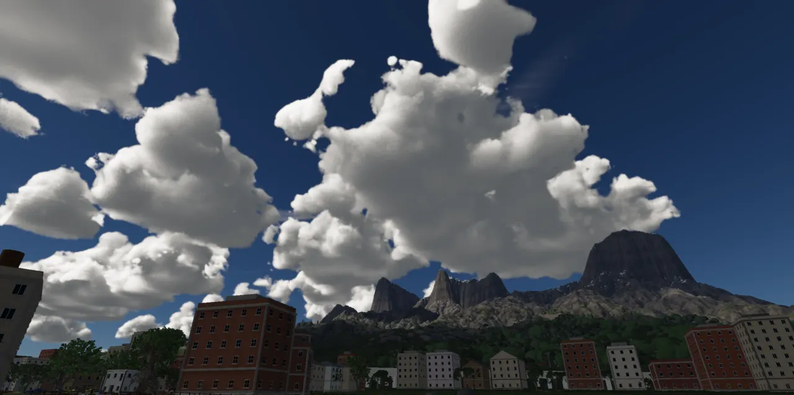

Weather and wind
The weather is four states written as data and eased into one another over time. It sets one wind for everything the air moves, and it drives a small fluid simulation of the air over the island and its sea. That simulation decides where clouds form: over sunlit land and windward slopes, carried off downwind, and not over the open sea or over a summit that stands above the inversion.
The problem
A sky has to change: clear days, grey days, a storm now and then, and fronts that arrive rather than cut in. The same weather has to agree everywhere it shows. If the clouds race east while the grass leans west and a parachute drifts north, the world reads as fake. And the clouds have to sit where real clouds sit. Seen from a satellite on a summer afternoon, an island's clouds are organised by the land: cumulus over the sunlit ground and high slopes, clear coasts and sea, clear peaks above the trade-wind cap, and long plumes trailing downwind. Noise scattered evenly over sea and land can't make that pattern.
Three ideas carry the system:
- A weather is a set of numbers, and the numbers are data. Each state (clear, fair, overcast, storm) is a
table in
assets/scripts/clouds.lua: cloud cover, light, wind and the air the simulation needs (ADR-0388). Changing weather means easing every number toward the new state's values over about 40 seconds. - One wind, one source.
DayNightSystempublishes the eased weather as two components, theWindand theWeatherNow. Everything that moves with the air reads the first, and the simulation follows both (ADR-0337, ADR-0390). - Simulate the organisation, not the clouds. A coarse 2D grid of stable fluids (Stam's method) carries the wind, the lift, the humidity and a cloud amount over at least 64 km. The cloud renderer still draws every cloud; the simulation only tells its weather map how much cloud to put where, and of what kind (ADR-0390).
The shape of it
Who owns what. DayNightSystem owns the weather and publishes it; the systems after it
(WeatherSimSystem, then CloudMapSystem, in that order in both the editor and the game
states) read the components. The wind also reaches the shaders through Renderer::windDir/Speed/Gust.
The box at the bottom is where this page hands over to Clouds.
The weather states, as data
A weather state is a point in a space of numbers. The first version (commit 68a1a9b0, 2026-08-17,
after Glenn's "most of the time the clouds shouldn't be that dramatic unless there's a storm") made the old default
deck the storm state and added a milder fair for everyday skies. The states lived in a C++ switch until
ADR-0388 moved them into clouds.lua, under the rule that a new kind of anything is a data edit. Every
field is required: a state's numbers are its whole definition, and the loader fails on a missing one rather than
guessing.
weathers = {
-- a clear day is a few small puffs at most (Glenn, 2026-09-14: "can we see different weather?"), a light breeze
clear = { coverage = 0.04, density = 0.25, scale = 0.90, sun = 1.00, ambient = 1.00, shadow_soften = 0.00,
types = { 0.62, 0.70 }, wind = 3.0, gust = 0.20,
humidity = 0.74, inversion = 1600, convection = 0.6, lift = -0.10 },
-- the everyday sky: a fifth of it under fair-weather cumulus, a little stratocumulus, a moderate breeze
fair = { coverage = 0.22, density = 0.45, scale = 1.10, sun = 1.00, ambient = 1.05, shadow_soften = 0.08,
types = { 0.47, 0.75 }, wind = 6.0, gust = 0.35,
humidity = 0.80, inversion = 2000, convection = 1.0, lift = 0.0 },
-- a stratus deck closing over (stratocumulus breaking it), a fresh wind
overcast = { coverage = 0.90, density = 0.60, scale = 1.90, sun = 0.55, ambient = 1.35, shadow_soften = 0.60,
types = { 0.00, 0.40 }, wind = 9.0, gust = 0.40,
humidity = 0.92, inversion = 2500, convection = 0.3, lift = 0.35 },
-- towers among cumulus, a gale gusting ("most of the time the clouds shouldn't be that dramatic unless there's
-- a storm")
storm = { coverage = 0.92, density = 1.00, scale = 1.60, sun = 0.28, ambient = 1.45, shadow_soften = 0.85,
types = { 0.60, 1.00 }, wind = 16.0, gust = 0.70,
humidity = 0.95, inversion = 9000, convection = 1.6, lift = 0.20 },
},
The fields fall into four groups, and each group has a different reader:
| Fields | What they mean | Who reads them |
|---|---|---|
coverage, density, scale, types | The share of the sky under cloud, how thick the deck is, the noise's size, and the range of cloud types (0 stratus … 1 cumulonimbus) the day's clouds spread over | The cloud renderer and its weather map (Clouds) |
sun, ambient, shadow_soften | An overcast is a diffuser: less sun, more sky fill, softer shadows | DayNightSystem's lighting (Lights,
Sky) |
wind, gust | m/s at 10 m above the ground, and how squally (0 steady … 1 squally) | The Wind component (below) |
humidity, inversion, convection, lift | The air the sea gives, the height of the cap cumulus can't rise through, how strongly sunlit land heats the air, and a large-scale lift everywhere (a front; below zero, a high's sinking air) | The simulation, through
WeatherNow |
Read the last four fields of each state and you can see how a weather is made rather than painted. Clear has dry air, a low cap and sinking air. Overcast has wet air and a front's lift, so cloud forms over the sea as well as the land, while its weak convection keeps the land from standing out. Storm raises the cap to 9 km, so nothing stops the towers, and has the strongest convection.
Easing from one state to the next
C++ holds the same numbers in one struct, WeatherTargets. Its defaults are fair's, so with no
clouds.lua every state is fair rather than a second copy of the table. weatherTargets(kind)
reads the loaded cloud book. WeatherNow, the component the simulation reads, is just the eased targets
plus an on/off flag:
// The CLOUD TYPES the weather's map spreads over (ADR-0336; 0 stratus, 1/3 stratocumulus, 2/3 cumulus, 1 // cumulonimbus): easing between states morphs the types too -- a front's puffs flatten into a deck. float typeLo = 0.47f, typeHi = 0.75f; // THE WIND the state blows (ADR-0337, wind.h): m/s at 10 m, and how squally float windSpeed = 6.0f, windGust = 0.35f; // THE SIMULATION's air (ADR-0390, sky/weather_sim.h): the humidity the sea gives it, the inversion's height (m), // how strongly sunlit land convects, and the large-scale lift (a front) float humidity = 0.80f, inversion = 2000.0f, convection = 1.0f, lift = 0.0f; }; // THE WEATHER NOW, for the systems that follow it (WeatherSimSystem; rain and sound to come): DayNightSystem publishes // it each step on the Wind's entity, its targets eased. `active` false: the weather is off (the level's own sky). struct WeatherNow { WeatherTargets live; bool active = false; };
WeatherCycle holds the current state and a live copy of every number. Each fixed step it moves every
live value a share of the way to the state's target. The share is 1 − exp(−dt / 40 s), so about 63 % of
the gap closes every 40 seconds of simulation time. Because the clouds are placed by these numbers rather than
cross-faded between two pictures, a front grows the existing clouds in place. live() packs the live
values back into a WeatherTargets, which is what WeatherNow carries.
static constexpr double kAutoHours = 4.0; // in-world hours between rolls // Exponential approach: ~63% of the gap closes per tau of sim time, so a // front takes a couple of minutes to fully arrive instead of popping. static constexpr double kTauSeconds = 40.0; void ease(double dtSeconds) { const WeatherTargets t = weatherTargets(state); const float a = static_cast<float>(1.0 - std::exp(-dtSeconds / kTauSeconds)); coverage += (t.coverage - coverage) * a; // ... humidity += (t.humidity - humidity) * a; inversion += (t.inversion - inversion) * a; convection += (t.convection - convection) * a; lift += (t.lift - lift) * a; } // the live values as targets (WeatherNow) WeatherTargets live() const { // ... }
Two other motions sit beside the easing. snap() jumps straight to the targets, for a state restored at
start (yesterday's storm should not fade in from a clear boot) or a now request. The auto walk
rolls every 4 in-world hours: half the time the state stays, a quarter of the time it steps one milder, a quarter
one harsher. It never skips a neighbour, so a clear noon can't jump-cut to a thunderhead. Since ADR-0340 the walk
belongs to a calendar: each in-world day opens with a state drawn from the level's climate (summer and winter
odds blended by the day of the year, flipped south of the equator), and the walk within the day is seeded by that
day. A given day always has the same weather however you reach it.
The weather command, and whose weather wins
| Command | What it does |
|---|---|
weather clear|fair|overcast|storm | Sets the state by hand and turns the auto walk off. The new state eases in over about 40 s. |
weather <state> now | The same, snapped at once (screenshots, A/B comparisons). |
weather auto | Back to the calendar: today's weather, then the walk. |
weather off | The weather lets go; the cloud panel and the clouds command
own the deck again, and WeatherNow.active is false (its numbers are fair's). |
weather? | Prints the state, and (auto) if it is walking. |
The command publishes a WeatherRequest event (ADR-0253's control bus), which
DayNightSystem consumes. At startup, three sources compete, in this order:
| # | Source | Rule |
|---|---|---|
| 1 | Remembered weather (settings.json: weather.state,
weather.auto) | Only a state chosen by hand survives a restart, and it is snapped. Saved auto weather is not restored (ADR-0340). |
| 2 | The level's "dayNight": {"weather": ...} | off, auto,
or a fixed state. A level's "climate" sets the odds, the prevailing wind's bearing and a wind
scale. |
| 3 | Nobody said anything | A level with a volumetric cloud deck gets auto weather, so days differ by default. |
Remembered weather used to win too often. Every session saved its weather, and the
saved state outranked the level and the day's roll, so "the day's roll almost never ran" (ADR-0340). Earlier,
ADR-0102, calibrating realism against photographs, had found river_valley coming out overcast (its
deck turned the weather to auto, and auto's day was overcast) and noted that "a remembered weather in
settings.json beats the level's dayNight.weather by design", so screenshots pinned it with
--cmd "weather fair now". ADR-0340 also fixed a seed
bug: the level-policy path rolled with a hard-coded 7 where the default path read weather.seed.
Publishing the weather: Wind and WeatherNow
At the end of every fixed step, after easing, DayNightSystem works out the wind and writes both
components onto one entity. The direction comes from the climate's prevailing bearing (it blows from that
bearing, so the air goes the opposite way; north is −z, east +x) and veers about it with two slow sines: ±0.52 rad
over 26 in-world hours plus a smaller 7.3-hour wobble, the "±30°" of ADR-0337. The speed and gustiness are the
weather's, or a moderate 6 m/s and 0.35 when the weather is off.
// THE WIND (ADR-0337): the weather's speed and gustiness (a moderate breeze with the weather off); its direction // veers slowly through the day about the seed's prevailing one (+-30 degrees over ~26 in-world hours) { // (the climate's prevailing wind, ADR-0340: it comes FROM that compass bearing, so it goes toward the opposite; // north is -z, east +x) const double hours = cycle.absoluteDay() * 24.0; const double toward = (climate_.prevailingFromDeg + 180.0) * 0.017453292519943295 + 0.52 * std::sin(hours * 6.283185307 / 26.0) + 0.17 * std::sin(hours * 6.283185307 / 7.3); wind.dir = Vec3(std::sin(toward), 0.0, -std::cos(toward)); wind.speed = (weatherActive ? weather.windSpeed : 6.0) * climate_.windScale; wind.gust = weatherActive ? weather.windGust : 0.35; wind.time += ctx.clock.fixedStep(); if (!ctx.world.alive(windEntity_)) { windEntity_ = ctx.world.create(); ctx.world.add<Wind>(windEntity_, wind); } else if (Wind* w = ctx.world.get<Wind>(windEntity_)) { *w = wind; } // ...and the weather now, beside it (ADR-0390: the simulation follows it) WeatherNow now; now.live = weatherActive ? weather.live() : weatherTargets(WeatherKind::Fair); now.active = weatherActive; if (WeatherNow* wn = ctx.world.get<WeatherNow>(windEntity_)) *wn = now; else ctx.world.add<WeatherNow>(windEntity_, now); ctx.renderer.windDir[0] = static_cast<float>(wind.dir.x); ctx.renderer.windDir[1] = static_cast<float>(wind.dir.z); ctx.renderer.windSpeed = static_cast<float>(wind.speed); ctx.renderer.windGust = static_cast<float>(wind.gust); }
Easing and publishing use simulation time (ctx.clock.fixedStep()): pausing the game freezes the
weather with everything else, and slow motion slows it. The auto walk, though, rides the day's clock, so it holds
when the day/night cycle is paused while an in-flight front still finishes arriving.
The wind
Before ADR-0337, "wind" was three unrelated constants: the clouds drifted along +x, grass and trees swayed toward a
fixed (0.85, 0.30), and the sea's wave trains had fixed headings. Glenn asked whether the weather's wind could also
push "players ... the parachute and wing suit ... grass or trees ... the waves in the sea". The answer was one
Wind and one question anyone can ask of it:
struct Wind { Vec3 dir{0.94, 0.0, 0.34}; // where the air is going, unit, horizontal Real speed = 6.0; // m/s at 10 m above the ground Real gust = 0.35; // 0 steady .. 1 squally: how much stronger a gust is than the mean Real time = 0.0; // seconds: what carries the gust patches downwind }; // The gust factor at a point: 1 - gust/2 .. 1 + gust, patches ~120 m across travelling with the wind inline Real windGustFactor(const Wind& w, const Vec3& p) { const Real s = 1.0 / 120.0; const Vec3 q = p - w.dir * (w.speed * w.time); // the air that is here now was upwind of it const Real n = 0.65 * valueNoise2(q.x * s, q.z * s, 0x57u) + 0.35 * valueNoise2(q.x * s * 2.7 + 5.3, q.z * s * 2.7 - 1.9, 0x57u); return 1.0 + w.gust * (1.5 * n - 0.5); } // The wind at a point, m/s, horizontal: the mean along `dir`, stronger with height (the power law, a = 0.14, held // within 0.6 .. 1.8 of the 10 m speed) and gusting inline Vec3 windAt(const Wind& w, const Vec3& p, Real groundY = 0.0) { const Real h = std::max(p.y - groundY, 2.0); const Real prof = std::clamp(std::pow(h / 10.0, 0.14), 0.6, 1.8); return w.dir * (w.speed * prof * windGustFactor(w, p)); }
Two details are worth reading closely. The gust patches are sampled at p − dir · speed · time: the air
over a point now was upwind of it a moment ago, so the noise pattern travels downwind at the wind's speed, and a
gust has a place and a direction rather than flickering everywhere at once. The noise is
valueNoise2, the engine's one value noise (ADR-0389 found value noise written seven times and kept one).
The profile is the meteorologists' power law for wind over open ground, u(h) = u₁₀ (h/10)0.14,
clamped so that however high you fly the wind is at most 1.8 times the 10 m wind.
| Reader | How it uses the wind |
|---|---|
Grass and trees (mesh.vert) | Sway along the wind: 0.12 m of amplitude at 6 m/s, scaling with speed, the frequency with √speed. Gust fronts are bands moving downwind, so a field bows in waves, and a mean downwind lean is added (ADR-0337; see Trees). |
The sea (mesh.frag) | The first of four wave trains heads downwind; heights scale by speed / 6; whitecaps run from none in a calm to many in a gale. |
| Glide and parachute | Ground speed is airspeed plus windAt(position): a chute drifts and
is buffeted, a wing suit makes little headway into a gale (The player). |
The clouds' drift (CloudMapSystem) | Integrated on the CPU along the wind, scaled by the
deck's own wind knob per 6 m/s of ground wind, so a veering wind turns the drift rather than
swinging the sky (ADR-0337, moved into CloudMapSystem by ADR-0386). |
| The simulation | The prevailing wind the grid relaxes toward (below). |
RT_WIND_TIME=<seconds> pins the wind's clock for the renderer's sway and for the clouds'
drift, so every run of the cloud lab (tools/cloud_lab.py) has its clouds in the same place and an A/B
is honest. It does not touch Wind::time itself.
Still one airmass. The Wind component is the same everywhere on the map:
trees in the lee of a ridge sway exactly like trees on its crest. The simulation below computes a wind that does
vary by place (round the mountains, into the heated land), but nothing outside the simulation reads it yet; that is
issue #200.
Fixed since this page's commit: one gust model, carried by the wind. The shader's sway
made its own gust bands from its own clock, while windAt used the noise patches above, so a gust seen
crossing a field was not the one a glider met there. And the patches were placed at dir · speed ·
time, which swung the whole field round the world's origin whenever the wind veered, faster each hour. Since
2026-11-09 (58d12b54, ADR-0391) Wind::time is Wind::drift, the
distance the air has actually gone, summed a step at a time (drift += dir · speed · dt), and
windGustFactor reads p − drift. mesh.vert reads the very same patches:
shaders/vulkan/hash.glsl is hash.h's and noise.h's value noise bit for bit, and the drift rides the
globals' wind2.xy. Then (8485c1d8) the sway's ripple, which had rolled along one fixed
world axis whatever the wind did, was turned to run downwind, and the bend became a downwind lean that flutters
(0.4 to 1.4 of it) instead of a swing that tipped blades into the wind. RT_WIND_TIME still pins the
ripple's clock and the clouds' drift; the gust patches follow Wind::drift.
Why simulate the weather
By 2026-11-08 the clouds were placed by a weather map of soft cloud cells (ADR-0386, Clouds),
bunched into fields and streets around curl-noise eddies 10–30 km across (ADR-0389). Seen from above with the new
cloudmap command it still read wrong. Glenn: "That looks too dense and doesn't look like a real weather
system", then: "It feels like there are massive cloud structures that noise can't really create so we should
simulate something more realistic."
The reference was real islands. NASA Worldview's MODIS Aqua true-colour views, taken around 13:30 local time on
summer afternoons of 2022 and 2023 (CREDITS.md; measured, not shipped), showed the same thing on every
island:
Puerto Rico
Popcorn cumulus over the land only, cells 1–3 km, about a third of the land covered; the sea round it about 3 %, with a clear coastal strip. On another date the cells merged into one mass streaming downwind.
Corsica
Cumulus only along the mountain spine; the coast, lowlands and sea clear.
Hawaii
Cloud piled on the windward slopes; the summits, above the trade-wind inversion near 2 km, poke through clear.
Canaries
Small cumulus fields over open sea, and clear wakes in the islands' lee.
The organiser is the land, through physics a noise function can't know about: the sun heats land faster than sea,
the heated air rises and draws a sea breeze in from the coast, wind forced up a slope cools and condenses, a cap of
warm air (the inversion) stops cumulus at a fixed height, and whatever forms is carried downwind before it
evaporates. The weather plan's part C (~/.claude/plans/clouds-weather.md) became ADR-0390: simulate just
enough of that to get the pattern.

The simulation
Weather models are 3D and run on supercomputers. This one is deliberately small: a single 2D grid treated as one slab, the boundary layer (the lowest kilometre or two of air, where the ground's heat and roughness are felt). It has no temperature field and no vertical levels. Each physical effect is a term with its own named time or length scale, tuned until the made-up test island looks like the satellite pictures. The diagram shows the effects it keeps, on a cross-section along the wind:
What the grid keeps, drawn in profile (the grid itself is flat: these are its 2D fields read as a story). In the grid, "ground above the inversion" is a wall the wind goes round, not over.
The grid and its fields
WeatherSim::init lays an n×n grid (256 in the engine) over a square height raster and
marks each cell land or sea against the level's sea level. WeatherSimSystem makes that raster with
rasterizeTerrain, the same function DayNightSystem uses for the mountains' shadow, over
the level's square or 64 km, whichever is wider. At 64 km a cell is 250 m. The 64 km minimum exists so a small level
still has sea round it for the wind to come from.
int n_ = 0; double originX_ = 0.0, originZ_ = 0.0, cell_ = 1.0; std::vector<float> h_; // ground above the sea, m (0 over the sea) std::vector<float> land_; // 1 land, 0 sea std::vector<float> u_, v_; // the wind, m/s std::vector<float> q_; // relative humidity std::vector<float> c_; // cloud, 0..1 std::vector<float> lift_; // the lift, unitless (~0..1 a cumulus's) std::vector<float> conv_; // the convective share of the lift, 0..1 std::vector<float> p_, div_, tmp_, tmp2_;
Its inputs each step are small: the prevailing wind (direction and speed, from Wind), the sun's height
as a sine (sunUp, negative at night), the seconds to advance, and the weather's four numbers from
WeatherNow. The class is pure: no engine state, no clock, so the tests drive it directly.
One sub-step
WeatherSim::subStep, top to bottom of the function. The two blue boxes are where the
island's pattern is made: the convergence the heating asks for, and where the lifted air saturates.
The scales
Every constant sits at the top of weather_sim.cpp with the physical quantity it stands for:
// THE SCALES (each the physical one it stands for, tuned against the satellite references: test_weather_sim) constexpr double kWindRelax = 2400.0; // s: the wind returns to the prevailing one (the free air above steering it) constexpr double kBreeze = 1.2e-4; // 1/s of convergence a unit of heating draws in (a sea breeze: ~2-4 m/s) constexpr double kConvergenceLift = 1500.0; // lift per 1/s of convergence (1e-4: 0.15) constexpr double kSlopeLift = 0.5; // lift per m/s the wind climbs (0.3 m/s up a slope: 0.15) constexpr double kHeatLift = 0.6; // lift per unit of heating (sunlit high ground: ~0.6) constexpr double kSeaMoisten = 3.0 * 3600.0; // s: the sea brings the air to its humidity constexpr double kLandDry = 8.0 * 3600.0; // s: ...and the land dries it toward its own (drier) share constexpr double kLandShare = 0.88; // the land's humidity, a share of the sea's constexpr double kLiftMoisture = 0.30; // how much a unit of lift brings the air nearer saturation (rising, it cools) constexpr double kSaturation = 0.91; // the humidity (with the lift's help) a cloud forms past constexpr double kCondense = 600.0; // s: a cloud forms... constexpr double kEvaporate = 1500.0; // ...and goes, slower: carried downwind meanwhile (the plumes) constexpr int kJacobi = 30; // pressure iterations a sub-step (warm-started)
| Constant | Value | What it means in the weather |
|---|---|---|
kWindRelax | 2400 s (40 min) | How fast the grid's wind forgets local disturbances and returns to the prevailing wind. It stands in for the free air above the slab, which keeps steering it. Shorter, and the wakes and sea breezes die before they matter; longer, and eddies wander the grid. |
kBreeze | 1.2 × 10⁻⁴ s⁻¹ | Convergence asked per unit of heating: how hard hot land pulls air in. Sized for a sea breeze of about 2–4 m/s. |
kConvergenceLift | 1500 | Lift per s⁻¹ of convergence: air that piles in has to go up. 10⁻⁴ s⁻¹ gives 0.15. |
kSlopeLift | 0.5 | Lift per m/s the wind climbs (wind · slope). 0.3 m/s up a slope gives 0.15; the lee's descent gives negative lift (sinking). |
kHeatLift | 0.6 | Lift per unit of heating: a thermal. Sunlit high ground at noon heats about 1, so about 0.6. |
kSeaMoisten, kLandDry, kLandShare | 3 h, 8 h, 0.88 | The sea brings the air to the weather's humidity in hours; over land it dries toward 88 % of that, more slowly, so air that crossed the coast recently is still sea air. |
kLiftMoisture | 0.30 | Rising air cools, so its relative humidity climbs: a unit of lift counts as 0.30 of humidity. |
kSaturation | 0.91 | Where humidity plus lifted humidity passes this, cloud forms (fully 0.12 past it). |
kCondense, kEvaporate | 600 s, 1500 s | Cloud forms in about 10 min and goes in about 25 (ADR-0390). The difference is what makes plumes: a cloud carried off the land at 6 m/s travels some 9 km in its 25 minutes of fading. |
kJacobi | 30 | Pressure-solve iterations per sub-step, starting from the previous sub-step's pressure. |
Fixed since this page's commit: the pressure solve converges. Thirty Jacobi sweeps
looked fine on average (a mean error of 0.001 in the cover), but measured against a 600-sweep solve on the test
island the cover was off by up to 0.29 in places: Jacobi carries a correction one cell a sweep, and the grid is 128
cells wide. Since 2026-11-09 (58d12b54, ADR-0391) the same 30 sweeps are red-black
successive over-relaxation (ω = 1.9, kPressureSweeps and kOverRelax), within 0.008 of
the converged cover at the same cost. The step's old-wind copy is a member now, not a vector made every sub-step,
and the grid starts over when the terrain under it changes (its seed, size or sea level).
Heating, the wind and the sea breeze
The heart of the step is about fifty lines. First the heating: sunlit land heats by the sun's height, from
0.35 at sea level to 1 at 1200 m and above (high ground heats the air more). By night the land cools by up to 0.3
and the sea, warmer than the land, heats by up to 0.15. Everything is scaled by the weather's
convection. Then the wind: relaxed toward the prevailing one, carried by itself, and the outer
two cells pinned to the prevailing wind, the free air the grid opens onto.
void WeatherSim::subStep(const WeatherSimInputs& in, double dt) { const WeatherSimWeather& w = in.weather; const double U0 = in.windX * in.windSpeed, V0 = in.windZ * in.windSpeed; const double day = std::max(0.0, static_cast<double>(in.sunUp)); const double night = std::clamp(-static_cast<double>(in.sunUp) * 3.0, 0.0, 1.0); const double inv = w.inversion; // THE HEATING: sunlit land, more on high ground; by night the land cools under the sea's warmth double meanHeat = 0.0; for (std::size_t k = 0; k < h_.size(); ++k) { const double high = std::clamp(h_[k] / 1200.0, 0.0, 1.0); const double heat = w.convection * (land_[k] * (day * (0.35 + 0.65 * high) - 0.3 * night) + (1.0 - land_[k]) * 0.15 * night); tmp2_[k] = static_cast<float>(heat); meanHeat += heat; } meanHeat /= static_cast<double>(h_.size()); // THE WIND: back toward the prevailing one; carried by itself; the far edge is the free air const double relax = std::min(1.0, dt / kWindRelax); // ... std::vector<float> uOld = u_; advect(u_, uOld, v_, dt, tmp_); advect(v_, uOld, v_, dt, tmp_); // ... (the outer two cells set to U0, V0) // ...made to converge where the heating asks (the projection: grad^2 p = div u - the asked divergence) const double inv2c = 1.0 / (2.0 * cell_); for (int j = 0; j < n_; ++j) for (int i = 0; i < n_; ++i) { const int il = std::max(i - 1, 0), ir = std::min(i + 1, n_ - 1), jd = std::max(j - 1, 0), ju = std::min(j + 1, n_ - 1); const double d = (u_[at(ir, j)] - u_[at(il, j)]) * inv2c + (v_[at(i, ju)] - v_[at(i, jd)]) * inv2c; div_[at(i, j)] = static_cast<float>(d + kBreeze * (tmp2_[at(i, j)] - meanHeat)); } // ... (30 Jacobi sweeps for p) for (int j = 0; j < n_; ++j) for (int i = 0; i < n_; ++i) { // ... u_[at(i, j)] -= static_cast<float>((p_[at(ir, j)] - p_[at(il, j)]) * inv2c); v_[at(i, j)] -= static_cast<float>((p_[at(i, ju)] - p_[at(i, jd)]) * inv2c); // ground standing above the inversion is a wall: the air goes round it const double wall = smoothstep(inv - 250.0, inv + 250.0, h_[at(i, j)]); u_[at(i, j)] *= static_cast<float>(1.0 - wall); v_[at(i, j)] *= static_cast<float>(1.0 - wall); }
The projection is the one clever move, borrowed from Jos Stam's "Stable Fluids" (1999). In an ordinary fluid solver
the projection removes all divergence: solve ∇²p = ∇·u, subtract ∇p, and the wind neither piles up nor spreads out.
Here the source on the right is ∇·u plus kBreeze × (heat − mean heat). Subtracting ∇p then leaves
a wind whose divergence is −kBreeze × (heat − mean): it converges over hot land and diverges over the
cooler sea, which is what a sea breeze is. Subtracting the mean keeps the total zero, which a pressure solve with
closed edges needs. No temperature or buoyancy is simulated; the heating simply asks for convergence and the
projection supplies a wind field that delivers it.
The wall follows: where the ground stands within 250 m of the inversion or above it, the wind is faded to
nothing, so the air flows round the peak. That is how a Mauna Kea gets a wake on each side and stays clear on top.
The advection is semi-Lagrangian: each cell takes what was upwind of it dt ago, read bilinearly through
the shared bilinearGrid (since review commit 12695b94; it had its own copy). It is
unconditionally stable, which is why Stam's method suits a game: a long step blurs instead of exploding.
Lift, humidity and cloud
// THE LIFT: the convergence, the wind up the slope (down it: sinking), the heating, the weather's own for (int j = 0; j < n_; ++j) for (int i = 0; i < n_; ++i) { // ... const double conv = -d * kConvergenceLift; const double slope = (u_[k] * dhx + v_[k] * dhz) * kSlopeLift; const double heat = std::max(0.0, static_cast<double>(tmp2_[k])) * kHeatLift; // (the outer ring is the free air the grid opens on: pinned to the prevailing wind, its convergence is the // pinning's, not the weather's -- it lifted false cloud along the grid's edges) const bool ring = i < 4 || j < 4 || i >= n_ - 4 || j >= n_ - 4; lift_[k] = static_cast<float>(std::clamp((ring ? 0.0 : conv + slope) + heat + w.lift, -1.0, 2.0)); conv_[k] = static_cast<float>(std::clamp(heat * 1.4 + std::max(0.0, conv), 0.0, 1.0)); } // THE MOISTURE: carried; the sea moistens the air toward its humidity, the land dries it toward a share of it advect(q_, u_, v_, dt, tmp_); for (std::size_t k = 0; k < q_.size(); ++k) { const double target = land_[k] > 0.5f ? w.humidity * kLandShare : w.humidity; const double tau = land_[k] > 0.5f ? kLandDry : kSeaMoisten; q_[k] += static_cast<float>((target - q_[k]) * std::min(1.0, dt / tau)); } // THE CLOUD: where the lifted air saturates, and none where the ground stands above the inversion; carried for (std::size_t k = 0; k < c_.size(); ++k) { const double sat = q_[k] + kLiftMoisture * lift_[k] - kSaturation; const double above = smoothstep(inv - 250.0, inv + 250.0, h_[k]); const double want = smoothstep(0.0, 0.12, sat) * (1.0 - above); const double tau = want > c_[k] ? kCondense : kEvaporate; c_[k] += static_cast<float>((want - c_[k]) * std::min(1.0, dt / tau)); } advect(c_, u_, v_, dt, tmp_);
Lift is a sum of four reasons air rises: convergence (air piling in), the wind running up the slope (the dot
product of wind and ground gradient; negative in the lee), the heat of a thermal, and the weather's own large-scale
lift. The convective share conv_ is kept separately: it says how much of the lift is heat-driven,
and the cloud map uses it to lean toward the severe end of the day's cloud types (towering cumulus over hot ground,
flatter cloud where a front's lift alone makes it).
The cloud does not have a budget of water. Each cell has a want, from 0 to 1, set by how far humidity plus lift passes saturation, and the cloud relaxes toward it: quickly when growing, slowly when fading. A worked case with the constants: on fair's sea, humidity settles at 0.80, so cloud needs lift of about 0.37 before it starts. On land the air dries toward 0.704 and needs lift near 0.69. The sun alone gives low land 0.6 × 0.35 ≈ 0.21 at noon and high ground about 0.6, so cloud forms only where heat, slope and convergence add up. That is the windward slopes and the heart of the island, not the coast.
![Four top-down maps of the test world: a 12 km island and a small 3000 m peak north of it in a dark sea. Fair afternoon: the island white with cloud on its upwind side, a fading plume trailing east, the small peak's top clear with two streaks off its flanks. Lift: orange over the island's upwind half, darker in its lee, the peak orange upwind and blue downwind, small arrows showing air drawn in. Night: no cloud on the island. Overcast: grey cloud over the whole sea, the island white, a clear wake in its lee](img/weather/sim-fields.webp)
madeWorld() in tests/test_weather_sim.cpp: 64 km of sea,
a 12 km island rising to 1400 m, and a 3.5 km peak to 3000 m 18 km north, above the 2000 m inversion), settled
for four hours with a 6 m/s wind toward +x (east, to the right; north is up). Drawn for this page by a scratch
program that links weather_sim.cpp as the test does. Top right: lift in colour (orange rising, blue
sinking) with arrows for the wind's change from the prevailing wind. The cover numbers match ADR-0390's: the
island 0.53, the sea upwind 0, the sea downwind 0.12, the summit 0; overcast's upwind sea 0.75.Read the four maps against the satellite list. The upwind half of the island has the cloud, where the slope lift and the heating add; the lee half sinks and stays lighter. A plume runs east off the island and fades. The high peak is clear on top, clouded round its flanks, and sheds two streaks from its sides, like Hawaii's. By night the island clears (the land cools, the sea breeze reverses), though the high peak's flanks keep some cloud from the wind forced up them. In the overcast, the front's lift and wet air close the sea, and the island's lee shows a clear wake, the Canaries' pattern.
Sub-steps, and settling
void WeatherSim::step(const WeatherSimInputs& in) { if (n_ <= 0 || in.dt <= 0.0) return; // sub-steps the wind crosses at most a cell in (and no longer than two minutes: the relaxations' resolution) const double fastest = std::max(1.0, static_cast<double>(in.windSpeed) * 1.5 + 4.0); const double most = std::min(120.0, 0.9 * cell_ / fastest); const int steps = std::max(1, static_cast<int>(std::ceil(in.dt / most))); for (int s = 0; s < steps; ++s) subStep(in, in.dt / steps); } void WeatherSim::settle(const WeatherSimInputs& in, double seconds) { WeatherSimInputs s = in; s.dt = seconds; step(s); }
Semi-Lagrangian advection is stable at any step, but it is only accurate when the wind moves less than a cell
per step, so step splits its time. The "fastest" wind allows half again the prevailing speed plus 4 m/s
for the breezes. For fair's 6 m/s on 250 m cells a sub-step is 0.9 × 250 / 13 ≈ 17 s; for a 16 m/s storm about 8 s.
The 120 s ceiling only applies on coarse grids. settle is just a long step: four hours by default, which
for fair weather is over 800 sub-steps and, per ADR-0390, about 5 s on a worker. Four hours is many times the wind's
40-minute memory and the cloud's 10 and 25 minutes, and longer than the sea's 3-hour moistening, so the pattern has
formed; only the land's 8-hour drying is still on its way.
Running it: WeatherSimSystem
The system does three jobs: build the grid once the terrain is known, keep the simulation moving in the weather's time, and hand finished states to the readers without ever blocking a frame.
One simulation, one worker, one immutable snapshot per step. The dashed arrows are reads of the shared snapshot.
void WeatherSimSystem::update(FrameContext& ctx) { if (!ctx.view.lighting.volumetricClouds.enabled) return; if (!begun_) begin(ctx); // the weather's time: the day's clock where it runs, real time where it is held const double perSecond = ctx.view.lighting.clockHoursPerSecond > 0.0f ? ctx.view.lighting.clockHoursPerSecond * 3600.0 : 1.0; gathered_ += std::clamp(ctx.frameDelta, 0.0, 0.25) * perSecond; if (stepping_ && pending_.wait_for(std::chrono::seconds(0)) == std::future_status::ready) { Stepped done = pending_.get(); sim_ = std::move(done.sim); snapshot_ = std::move(done.snapshot); stepping_ = false; publish(ctx); } if (!stepping_ && sim_.ready() && gathered_ >= kStepEvery) { WeatherSimInputs in = inputsNow(ctx); in.dt = std::min(gathered_, 3600.0); // (an hour at most at once: a long stall does not leap the sky) gathered_ = 0.0; pending_ = std::async(std::launch::async, [sim = std::move(sim_), in]() mutable { sim.step(in); std::shared_ptr<const WeatherSim> snapshot = std::make_shared<const WeatherSim>(sim); return Stepped{std::move(sim), std::move(snapshot)}; }); stepping_ = true; } }
- The weather's time. The simulation advances on the day's clock: on a 30-minute day, an afternoon's convection builds and decays in minutes of play, in step with the sun. When the clock is held, it runs at real time so the sky still lives. Frame time is clamped to 0.25 s, so a hitch does not count as weather.
- Batched steps. Weather seconds pile up in
gathered_and are stepped in one go once 30 have gathered and the worker is free. A long stall is capped at an hour of weather at once. - The sun's height comes from the clock alone,
sin((hours − 6) · π / 12): 0 at 06:00 and 18:00, 1 at noon. The comment ininputsNowsays the latitude's finer arc is the sky's business, not the weather's. "Night" in the heating saturates once that sine is below −⅓, about 19:20 to 04:40. - The snapshot. The
WeatherSimitself is moved into the worker's lambda and back, so only one thread ever touches it. Each step also makes an immutable copy,shared_ptr<const WeatherSim>, and that copy is what is published. Readers (the cloud map bake, on another worker) keep their copy alive as long as they need it, while the next step runs on the original.
// THE WEATHER FIELD the simulation last finished (WeatherSimSystem publishes it on an entity of its own): read-only, // shared, swapped whole -- the weather map bakes from it on a worker while the next step runs struct WeatherField { std::shared_ptr<const WeatherSim> sim; uint64_t version = 0; // counts the handovers };
Who copies the snapshot. In the first version (commit 28155245) the
worker returned the stepped simulation, and publish() copied it into a new shared_ptr on the
main thread: twelve 256² float arrays, about 3 MB per handover, inside a frame. The review fixes for
#198 (commit 12695b94, "The weather's snapshot is copied on the worker, not the main thread") made the
worker return a Stepped pair, the simulation and its finished snapshot, so the main thread only moves
pointers. The same commit replaced the simulation's two hand-written bilinear reads with the shared
bilinearGrid, and its hand-written π with PI.
begin() runs on the first frame that has a volumetric cloud deck. It reads the level's
TerrainLodConfig, rasterizes the terrain over the larger of the level and 64 km, and logs the grid
("[weather] simulation over 64 km, 256^2 cells of 250 m, with its sea"). A level with no terrain gets
flat land and no sea. The first step is settle() on the worker, so the first sky the player sees has
already formed rather than growing from nothing.
How it feeds the clouds
The simulation produces no cloud shapes. The clouds are drawn by the volumetric march from a weather map:
an 80 km square of the sky round the camera, baked on a worker by CloudMapSystem, in which every cloud
is a soft footprint of some type and height (Clouds explains all of that). With a
WeatherField present, the map takes three things from it:
if (in.field) { // the simulation's cloud here, as footprints' worth per m^2, shared by the types its convection leans // to (this type's share of a narrow range round that point on the axis) const double wx = ax - in.driftX, wz = az - in.driftZ; const double c = std::min(0.97, static_cast<double>(in.field->coverAt(wx, wz))); const double t = in.typeLo + (in.typeHi - in.typeLo) * in.field->convectionAt(wx, wz); const std::array<float, 4> share = cloudTypeWeights(static_cast<float>(t - 0.08), static_cast<float>(t + 0.08)); m = -std::log(1.0 - c) * share[static_cast<std::size_t>(k)] * g.spacing * g.spacing / meanAreaOf[k];
- Cover → how many cells (λ). Cells dropped at random with density λ per m² leave a share
exp(−λ·A) of the sky uncovered, where A is a cell's area. So to cover a share c, the bake asks for
λ·A = −ln(1 − c) footprints' worth per square. Cover is capped at 0.97 so the logarithm stays finite.
The map is laid out in the moving air (the world plus the clouds' drift), so it reads the simulation at the
ground point under the air,
air − drift. - Convection → which type. The convective share picks a point on the day's type range (fair: 0.47–0.75), and the square's cells go to the types within ±0.08 of it: hot ground gets cumulus, a front's lift the flatter end.
- Closed sky → one mass. Where the simulated cover passes 0.55, a solid footprint fades in (full at 0.92), typed by the convection and at full height: "the structures no scatter of cells makes (a merged afternoon mass over a mountain, a front's deck)".
// THE SIMULATION's SOLID CLOUD: where it says the sky is closed, one continuous mass -- the structures // no scatter of cells makes (a merged afternoon mass over a mountain, a front's deck) if (in.field) { const double wx = x - in.driftX, wz = z - in.driftZ; const double mass = smoothstep(0.55, 0.92, static_cast<double>(in.field->coverAt(wx, wz))); if (mass > best) { best = mass; const double t = in.typeLo + (in.typeHi - in.typeLo) * in.field->convectionAt(wx, wz); slot = static_cast<float>(std::lround(std::clamp(t, 0.0, 1.0) * 3.0)) / 3.0f; height = 1.0f; } }
With a field present, the weather's coverage knob and ADR-0389's eddy-swirled moisture field stand
aside: the simulation says where. A new field version triggers a rebake at most every 10 seconds (ADR-0390 measured
0.7 s per bake). The weather map in turn drives the clouds' shadows on the ground (ADR-0387), so the simulation also
decides where the island is in shade.


island_8_nature on a fair afternoon.What the tests hold it to
tests/test_weather_sim.cpp builds the made world in the picture above and checks the satellite
patterns as numbers. The tests are the tuning target: every constant was tuned against them.
TEST_CASE(weather_sim_fair_afternoon_clouds_the_land_not_the_sea) {
WeatherSim s;
s.init(madeWorld(), 0.0, 256);
s.settle(fairAfternoon());
const float land = meanCover(s, [](double x, double z) { return std::hypot(x, z) < 10000.0; });
const float seaUpwind = meanCover(s, [](double x, double z) { return x < -20000.0 && std::fabs(z) < 8000.0; });
const float seaDownwind = meanCover(s, [](double x, double z) { return x > 14000.0 && x < 22000.0 && std::fabs(z) < 6000.0; });
const float summit = s.coverAt(0.0, -18000.0);
for (float c : s.cover()) CHECK(c >= 0.0f && c <= 1.0f && std::isfinite(c));
CHECK(land > 0.25f && land < 0.55f); // about a third of Puerto Rico's land under cumulus on a fair afternoon
CHECK(seaUpwind < 0.05f); // ...its sea upwind nearly clear
CHECK(seaDownwind > seaUpwind); // ...cloud carried off downwind
CHECK(summit < 0.1f); // a summit above the inversion stands clear (Mauna Kea)
}
| Test | Holds | Measured (ADR-0390) |
|---|---|---|
weather_sim_fair_afternoon_clouds_the_land_not_the_sea | Land cover 0.25–0.55; sea upwind < 0.05; more cloud downwind than upwind; the 3000 m summit < 0.1 | Land ~0.53, sea upwind 0, sea downwind 0.12, summit 0 |
weather_sim_the_land_clears_by_night | Night cover on the island under half the day's | "The land clears by night" |
weather_sim_an_overcast_closes_over_the_sea | Humidity 0.92, lift 0.35, convection 0.3: sea cover > 0.6 | 0.75 |
weather_sim_places_the_maps_clouds_over_the_land | The baked weather map: over 15 % of the island under cloud, under 3 % of the upwind sea | Island > 0.15, sea < 0.03 |
Note the upper bound of the land test, 0.55, against the measured 0.53, and the comment beside it, "about a third of
Puerto Rico's land". The island is cloudier than the reference; that is the first known gap below. The weather cycle
has its own tests in tests/test_weather_cycle.cpp: the states ordered mild to severe on the data, easing
that converges without overshoot, snaps that land exactly, the auto walk stepping only to neighbours and
deterministically, the calendar and seasons (weather_calendar_climate_and_season), and the wind's bounds
and travelling gusts (wind_rises_with_the_weather_and_keeps_its_bounds).
Known gaps
Too much cloud on land (#199)
A fair afternoon covers ~0.53 of the test island against Puerto Rico's ~0.35. ADR-0390's first owed item; issue #199.
Local wind for foliage (#200)
The simulation's wind varies by place, but trees, grass and
particles still read the one Wind. Issue
#200.
Rain (#201)
Precipitation from deep wet cells: rain shafts, particles, wet surfaces, sound (the plan's part D). Issue #201.
Fronts still walk
The day's state is still drawn from the calendar and walked; ADR-0340 expected the simulation to bring fronts in from the prevailing wind instead. Metal has no simulation-driven clouds yet (ADR-0390, owed).
How it got here
| When | What changed |
|---|---|
2026-08-17, 68a1a9b0 | Four weather states eased over a volumetric deck (τ 40 s), an auto
walk to neighbours every 4 hours, the weather command, and the state remembered across
sessions. |
| ADR-0102 | Realism calibration found remembered weather silently overriding a level's weather. |
| ADR-0336 | Each state names a range of cloud types, eased with the rest, so a front's puffs flatten into a deck. |
| ADR-0337 | One Wind from the weather for clouds, grass, trees, sea and flight; gusts as
travelling patches; the direction veering through the day. |
| ADR-0340 | Weather follows a calendar and the level's climate; only a hand-chosen state survives a restart; the seed bug fixed. |
| ADR-0386, 0387 | A weather map places the clouds (Nubis); the clouds cast shadows. The drift moves
into CloudMapSystem. |
| ADR-0388 | The four weathers move from a C++ switch into clouds.lua; every field
required. |
| ADR-0389 | Cells bunched round curl-noise eddies, a stand-in "until the wind field (part C) writes it"; one value noise for the engine, including the gusts. |
ADR-0390, 28155245 | The weather simulated over the land and the sea; the weathers gain
humidity, inversion, convection and lift; WeatherNow; the shared rasterizeTerrain. |
12695b94 | Review fixes: the snapshot copied on the worker; the shared
bilinearGrid and PI. |
Where to look
- src/engine/sky/weather_sim.h, weather_sim.cpp — the simulation, its scales, and WeatherField
- src/engine/systems/weather_sim_system.cpp — the grid over the level, the worker, the handover
- src/engine/weather_cycle.h — WeatherTargets, WeatherNow, WeatherCycle, the calendar and the climate
- src/engine/wind.h — the Wind, windGustFactor, windAt
- src/engine/systems/day_night_system.cpp — the weather policy at start, requests, easing, publishing Wind and WeatherNow
- assets/scripts/clouds.lua — the weathers (and the cloud types); scripting/clouds_lua.cpp reads them, sky/cloud_book.cpp serves
weatherTargets - src/engine/sky/cloud_map.cpp, systems/cloud_map_system.cpp — where the field becomes the weather map, and the drift
- src/engine/procgen/terrain_horizon.h — HeightRaster, rasterizeHeights, rasterizeTerrain
- tests/test_weather_sim.cpp, tests/test_weather_cycle.cpp, tests/test_cloud_map.cpp
- CREDITS.md — the NASA Worldview references
| Command / switch | What it does |
|---|---|
weather clear|fair|overcast|storm|auto|off [now] | Set the weather; now snaps
it |
weather? | The state, and whether it is on auto |
cloudmap <path.png> | The weather map from above (types tinted, the camera red, land marked when a simulated field is present) |
RT_WIND_TIME=<s> | Pin the sway's and the clouds' drift clock (the cloud lab) |
RT_TIME=<hour|moment|now> | Start at an hour; the simulation's sun follows the clock |
"dayNight": {"weather": ..., "climate": {...}} | A level's weather policy, odds and prevailing wind |
The commands are listed with the rest on the commands page. Related pages: Clouds (the march, types, shadows), Sky, atmosphere and exposure, Lights, Reflections, and Building the ground for the terrain the simulation rasterizes. (The terrain's "weather" block is a different thing: the erosion bake that grows the mountains.)